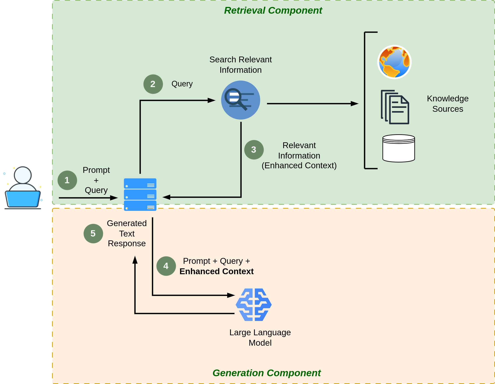
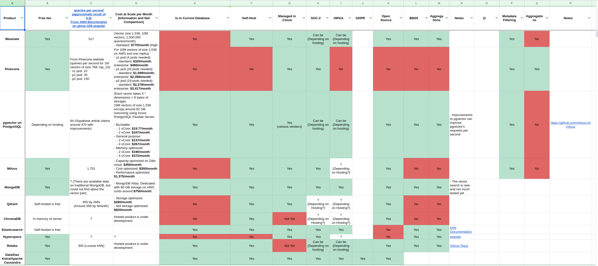
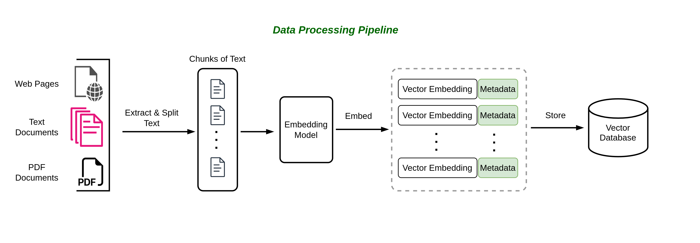

2 Retrieval Augmented Generation (RAG)
Generative AI, a subset of artificial intelligence, has revolutionized the field of text generation. It has paved the way for machines to generate human-like text, offering a myriad of benefits in various applications. From content creation and chatbots to language translation and natural language understanding, generative AI has proven to be a powerful tool in the world of natural language processing. However, it is essential to recognize that despite its remarkable capabilities, generative AI systems have limitations, one of which is their reliance on the data they have been trained on to generate responses.
2.1 The Limitation of Generative AI
Generative AI models, such as GPT3 (Generative Pre-trained Transformer), have been trained on vast datasets containing text from the internet. While this training process equips them with a broad understanding of language and context, it also introduces limitations. These models can only generate text that aligns with the patterns and information present in their training data. As a result, their responses may not always be accurate or contextually relevant, especially when dealing with niche topics or recent developments that may not be adequately represented in their training data.
2.1.1 Example: Transforming Customer Support with RAG
Imagine you’re the owner of a thriving e-commerce platform, selling a wide range of products from electronics to fashion. You’ve recently integrated a chatbot to assist your customers with inquiries, but you’re starting to see its limitations. Let’s explore how Retrieval-Augmented Generation (RAG) can help overcome these limitations and enhance the customer support experience.
Limitations of a Traditional Large Language Model (LLM)
Your existing chatbot is built around a traditional Large Language Model (LLM). While it’s knowledgeable about general product information, your customers are increasingly seeking more specific and real-time assistance. Here are some challenges you’ve encountered:
Product Availability: Customers often inquire about the availability of specific items, especially during sales or promotions. The LLM can provide information based on its training data, but it doesn’t have access to real-time inventory data.
Shipping and Delivery: Customers frequently ask about shipping times, tracking information, and potential delays. The LLM can provide standard shipping policies, but it can’t offer real-time updates on the status of an individual order.
Product Reviews: Shoppers want to know about recent product reviews and ratings to make informed decisions. The LLM lacks access to the latest customer reviews and sentiment analysis.
Promotions and Discounts: Customers seek information about ongoing promotions, discounts, and special offers. The LLM can only provide details based on the data it was trained on, missing out on time-sensitive deals.
2.1.2 How RAG Transforms Customer Support
Now, let’s introduce RAG into your e-commerce customer support system:
Retrieval of Real-Time Data: With RAG, your chatbot can connect to your e-commerce platform’s databases and data warehouses in real-time. It can retrieve the latest information about product availability, stock levels, and shipping status.
Incorporating User Reviews: RAG can scrape and analyze customer reviews and ratings from your website, social media, and other sources. It can then generate responses that include recent reviews, helping customers make informed choices.
Dynamic Promotions: RAG can access your promotion database and provide up-to-the-minute details about ongoing discounts, flash sales, and limited-time offers. It can even suggest personalized promotions based on a user’s browsing history.
Order Tracking: RAG can query your logistics system to provide customers with real-time tracking information for their orders. It can also proactively notify customers of any delays or issues.
2.2 Introducing Retrieval Augmented Generation (RAG)
To address the limitation of generative AI, researchers and engineers have developed innovative approaches, one of which is the Retrieval Augmented Generation (RAG) approach. RAG initially caught the interest of generative AI developers following the release of a seminal paper titled “Retrieval-Augmented Generation for Knowledge-Intensive NLP Tasks” (Lewis et al. 2020) at Facebook AI Research. RAG combines the strengths of generative AI with retrieval techniques to enhance the quality and relevance of generated text. Unlike traditional generative models that rely solely on their internal knowledge, RAG incorporates an additional step where it retrieves information from external sources, such as databases, documents, or the web, before generating a response. This integration of retrieval mechanisms empowers RAG to access up-to-date information and context, making it particularly valuable for applications where accurate and current information is critical.
In this chapter, we will delve deeper into the Retrieval Augmented Generation (RAG) approach, exploring its architecture, advantages, and real-world applications. By doing so, we will gain a better understanding of how RAG represents a significant step forward in improving the capabilities of generative AI and overcoming the limitations posed by reliance on static training data. Understanding the key concepts and components of this approach is essential for building an effective chat-to-PDF app.
2.2.1 Key Concepts and Components
To grasp the essence of Retrieval-Augmented Generation, let’s explore its key concepts and components:
- Retrieval Component: The retrieval component is responsible for searching and selecting relevant information from a database or corpus of documents. This component utilizes techniques like document indexing, query expansion, and ranking to identify the most suitable documents based on the user’s query.
- Generation Component: Once the relevant documents are retrieved, the generation component takes over. It leverages Large Language Models (LLMs) such as GPT-3 to process the retrieved information and generate coherent and contextually accurate responses. This component is responsible for converting retrieved facts into human-readable answers.
- Interaction Loop: Retrieval-Augmented Generation often involves an interaction loop between the retrieval and generation components. The initial retrieval may not always return the perfect answer, so the generation component can refine and enhance the response iteratively by referring back to the retrieval results.
- Fine-Tuning: Successful implementation of this approach often requires fine-tuning LLMs on domain-specific data. Fine-tuning adapts the model to understand and generate content relevant to the specific knowledge domain, improving the quality of responses.
- Latent Space Representations: Retrieval models often convert documents and queries into latent space representations, making it easier to compare and rank documents based on their relevance to a query. These representations are crucial for efficient retrieval.
- Attention Mechanisms: Both the retrieval and generation components typically employ attention mechanisms. Attention mechanisms help the model focus on the most relevant parts of the input documents and queries, improving the accuracy of responses.
2.2.2 How It Improves Question Answering
The Retrieval-Augmented Generation approach offers several advantages for question answering:
- Access to a Wide Knowledge Base: By integrating retrieval, the system can access a vast knowledge base, including large document collections. This enables the model to provide answers that may not be present in its pre-training data, making it highly informative.
- Contextual Understanding: The generation component uses the context provided by the retrieval results to generate answers that are not only factually accurate but also contextually relevant. This contextual understanding leads to more coherent and precise responses.
- Iterative Refinement: The interaction loop between retrieval and generation allows the system to iteratively refine its responses. If the initial response is incomplete or incorrect, the generation component can make further inquiries or clarifications based on the retrieval results, leading to improved answers.
- Adaptability to Diverse Queries: Retrieval-Augmented Generation can handle a wide range of user queries, including complex and multi-faceted questions. It excels in scenarios where simple keyword-based search engines may fall short.
- Fine-Tuning for Specific Domains: By fine-tuning the model on domain-specific data, you can tailor it to excel in particular knowledge domains. This makes it a valuable tool for specialized question answering tasks, such as legal or medical consultations.
In summary, Retrieval-Augmented Generation is a dynamic approach that combines the strengths of retrieval and generation to provide accurate, contextually relevant, and informative answers to user queries. Understanding its key components and advantages is essential as we move forward in building our chat-to-PDF app, which will leverage this approach to enhance question answering over PDF documents.
2.3 RAG Architecture
At its core, RAG is a framework that synergizes two vital components:
Retrieval Model: This component specializes in searching and retrieving relevant information from extensive datasets, such as documents, articles, or databases. It identifies passages or documents that contain information related to a user’s query.
Generation Model: On the other hand, the generation model excels in crafting coherent and contextually rich responses to user queries. It’s often based on large language models (LLMs) like GPT-3, which can generate human-like text. Figure 2.1 shows the RAG architecture.

2.4 Building the Retrieval System
In this section, we will focus on building the retrieval system, a critical component of the chat-to-PDF app that enables the extraction of relevant information from PDF documents. This section is essential for implementing the Retrieval-Augmented Generation approach effectively.
2.4.1 Choosing a Retrieval Model
Choosing the right retrieval model is a crucial decision when building your chat-to-PDF app. Retrieval models determine how efficiently and accurately the system can find and rank relevant documents in response to user queries. Here are some considerations when selecting a retrieval model:
- TF-IDF (Term Frequency-Inverse Document Frequency): TF-IDF is a classical retrieval model that calculates the importance of terms in a document relative to a corpus. It’s simple to implement and effective for certain tasks.
- BM25: BM25 is an improved version of TF-IDF that accounts for document length and term saturation. It’s often more effective in modern retrieval tasks.
- Vector Space Models: These models represent documents and queries as vectors in a high-dimensional space. Cosine similarity or other distance metrics are used to rank documents. Implementations like Latent Semantic Analysis (LSA) and Word Embeddings (e.g., Word2Vec) can be used.
- Neural Ranking Models: Modern neural models, such as BERT-based models, are increasingly popular for retrieval tasks due to their ability to capture complex semantic relationships. They can be fine-tuned for specific tasks and domains.
- Hybrid Models: Combining multiple retrieval models, such as a combination of TF-IDF and neural models, can offer the benefits of both approaches.
- Domain and Data Size: Consider the specific requirements of your chat-to-PDF app. Some retrieval models may be more suitable for small or specialized document collections, while others excel in handling large, diverse corpora.
- Scalability: Ensure that the chosen retrieval model can scale to meet the needs of your application, especially if you anticipate handling a substantial volume of PDF documents.
2.5 Embeddings and Vector Databases for Retrieval in RAG
In addition to selecting an appropriate retrieval model, leveraging embeddings and vector databases can significantly enhance the performance and efficiency of the retrieval component within your chat-to-PDF app. Vector embeddings are a fundamental concept in modern information retrieval and natural language processing. They transform textual data into numerical vectors, enabling computers to understand and manipulate text data in a mathematical, geometric space. These embeddings capture semantic and contextual relationships between words, documents, or other textual entities, making them highly valuable in various applications, including the retrieval component of Retrieval Augmented Generation (RAG).
2.5.1 Vector Embeddings: An Overview
Vector embeddings represent words, phrases, sentences, or even entire documents as points in a high-dimensional vector space. The key idea is to map each textual element into a vector in such a way that semantically similar elements are located close to each other in this space, while dissimilar elements are further apart. This geometric representation facilitates similarity calculations, clustering, and other operations.
Examples of Vector Embeddings:
- Word Embeddings (Word2Vec, GloVe): Word embeddings represent individual words as vectors. For example, “king” and “queen” may be represented as vectors that are close together in the vector space because they share similar semantic properties.
- Document Embeddings (Doc2Vec, BERT): Document embeddings map entire documents (such as PDFs) into vectors. Two documents discussing similar topics will have embeddings that are close in the vector space.
There are abundent of tutorials and resources that can help you learn more about vector embeddings. Here are some resources that can help you get started:
2.5.2 Vector Databases and Their Role in Enhancing Retrieval
Vector databases, also known as similarity search engines or vector index databases, play a crucial role in the retrieval component of RAG by efficiently storing and retrieving these vector embeddings. They are specialized databases designed for retrieving vectors based on similarity, making them well-suited for scenarios where similarity between data points needs to be calculated quickly and accurately.
How Vector Databases Enhance Retrieval in RAG:
- Fast Retrieval: Vector databases employ indexing structures optimized for similarity search. They use algorithms like approximate nearest neighbor (ANN) search to quickly locate the most similar vectors, even in large datasets containing numerous documents.
- Scalability: Vector databases can efficiently scale as the corpus of documents grows. This ensures that retrieval performance remains consistent, regardless of the dataset’s size.
- Advanced Similarity Scoring: These databases offer a range of similarity metrics, such as cosine similarity or Jaccard index, allowing you to fine-tune the relevance ranking of retrieved documents based on your specific requirements.
- Integration with Retrieval Models: Vector databases can be seamlessly integrated into your retrieval system. They complement retrieval models like TF-IDF, BM25, or neural ranking models by providing an efficient means of candidate document selection based on vector similarity.
All of these factors has resulted in numerous new vector databases. Selecting and depending on one of these databases can have long-lasting consequences and dependencies within your system. Ideally, we opt for a vector database that exhibits strong scalability, all while maintaining cost-efficiency and minimizing latency. Some of these vector databases are: Qdrant, Weaviate, Pinecone, pgvector, Milvus, and Chroma.

2.6 RAG Data Ingestion Pipeline
Before your Chat-to-PDF app can effectively retrieve information from a vector database, it’s imperative to preprocess the PDF documents and create a structured and searchable index for the preprocessed data. This searchable index serves as the cornerstone of your application, akin to a meticulously organized library catalog. It empowers your system to swiftly and accurately locate relevant information within PDF documents, enhancing the efficiency and precision of the retrieval process.
Figure 2.3 illustrates the RAG data ingestion pipeline. in Chapter 3, we will fully discuss how to prepare, index, and store the documents in a vector database.

2.7 Challenges of Retrieval-Augmented Generation
The adoption of Retrieval-Augmented Generation (RAG) represents a significant advancement in natural language processing and information retrieval. However, like any complex AI system, RAG presents a set of challenges that must be addressed to fully harness its potential. In this section, we explore some of the key challenges associated with RAG.
2.7.1 Data Quality and Relevance
RAG heavily relies on the availability of high-quality and relevant data for both retrieval and generation tasks. Challenges in this area include:
Noisy Data: Incomplete, outdated, or inaccurate data sources can lead to retrieval of irrelevant information, impacting the quality of generated responses.
Bias and Fairness: Biases present in training data may lead to biased retrieval and generation, perpetuating stereotypes or misinformation.
2.7.2 Integration Complexity
Integrating retrieval and generation components seamlessly is non-trivial, as it involves bridging different architectures and models. Challenges include:
Model Compatibility: Ensuring that the retrieval and generation models work harmoniously, especially when combining traditional methods (e.g., TF-IDF) with neural models (e.g., GPT-3).
Latency and Efficiency: Balancing the need for real-time responsiveness with the computational resources required for retrieval and generation.
2.7.3 Scalability
Scaling RAG systems to handle large volumes of data and user requests can be challenging:
Indexing Efficiency: As the document corpus grows, maintaining an efficient and up-to-date index becomes crucial for retrieval speed.
Model Scaling: Deploying large-scale neural models for both retrieval and generation may require substantial computational resources.
2.7.4 Evaluation Metrics
Evaluating the performance of RAG systems presents difficulties:
Lack of Gold Standards: In some cases, there may be no clear gold standard for evaluating the relevance and quality of retrieved documents.
Diverse User Needs: Users have diverse information needs, making it challenging to develop universal evaluation metrics.
2.7.5 Domain Adaptation
Adapting RAG systems to specific domains or industries can be complex:
Domain-Specific Knowledge: Incorporating domain-specific knowledge and jargon into retrieval and generation.
Training Data Availability: The availability of domain-specific training data for fine-tuning models.
Addressing these challenges is essential to unlock the full potential of RAG in various applications, from question answering to content generation. As research and development in this field continue, finding innovative solutions to these challenges will be critical for building robust and reliable RAG systems that deliver accurate, relevant, and trustworthy information to users.
As we conclude our exploration of the foundations and the retrieval component of Retrieval-Augmented Generation (RAG) systems in this Chapter, we now turn our attention to the practical implementation of RAG pipelines in Chapter 3. In this next chapter, we’ll delve into the nitty-gritty details of how these systems come to life, starting with the preprocessing of PDF documents and the data ingestion pipeline. We’ll also discuss the generation components that make RAG systems work. Further, Chapter 3 explores the impact of text splitting methods on RAG quality and the crucial role of metadata in enhancing the overall RAG experience.